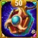
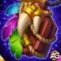
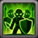

ジュー リワークガイド - ヒーローウォーズ アライアンスの止められない戦士
- 作成: Alexandre Domingos. .
かつて自然の道の恐れ知らずの狂戦士として知られたジューが、さらに激しい怒りをまとって帰ってきました。待望のリワークによって、PvEでも対人戦でも主導権を握れる強力なアタッカーへと変貌しています。これは小さな強化ではなく、伝説の完全な復活です。
新しいレリックによって元々高かった火力がさらに引き上げられ、スキルにも的確な調整が入ったことで、ジューはアライアンス版でも屈指の物理アタッカーになりました。長く使ってきたプレイヤーでも、これから解放するプレイヤーでも、このガイドを読めばジューの性能を最大限に引き出せます。


ヒーローウォーズ アライアンスのジューとは？
ジューは中列の射手であり、自然の道陣営を代表する最も象徴的なヒーローの1人です。絶え間ない怒りと自らを削って戦うスタイルで知られ、体力が減るほど大ダメージを出していくため、使いこなせれば非常に刺激的でリスクも高いピックになります。

- グリフクラス: 射手
- 配置: 中列
- メインステータス: 力
- 陣営: 自然の道
- ソウルストーンの入手方法: ヒロイックチェスト、イベント、ギルド戦ショップ
- 相性: ダークスター、エルミール、モジョ
- ヒドラ評価: S+
ジューのリワークは、元の攻撃性能を保ったまま生存力をしっかり強化しています。現在は力による伸びがより良くなっており、集中攻撃を受けている状況でも安定してダメージを出せます。さらにレリックのクリティカルダメージ強化が加わることで、物理主体のあらゆる編成で脅威になる存在になりました。
ヒドラ戦でも、アリーナの順位上げでも、ジューの新しいビルドはヒーローウォーズ アライアンスの全プレイヤーにとって十分に投資する価値があります。
ジュー - タリスマン最大ステータス比較
| ステータス |
 タリスマン1: 怒り |
 タリスマン2: 不死 |
|---|---|---|
| 知力 |  3,878 3,878 |
3,878 |
| 敏捷性 |  4,212 4,212 |
4,212 |
| 力 |  16,696 16,696 |
14,696 |
| 体力 |  1,285,562 1,285,562 |
1,205,562 |
| 物理攻撃 |  120,136 120,136 |
126,136 |
| 魔法攻撃 |  26,740 26,740 |
26,740 |
| アーマー |  11,531.8 11,531.8 |
34,301.8 |
| 魔法防御 |  21,852.5 21,852.5 |
21,852.5 |
| タフネス |  1,712 1,712 |
1,712 |
| アーマー貫通 |  26,285 26,285 |
26,285 |
| クリティカル率 |  22,174.3 22,174.3 |
14,584.3 |
| クラッシング |  4,183 4,183 |
4,183 |
ジューの長所と短所 - ヒーローウォーズ モバイル
✅ 長所
- アルティメット使用中はほぼ不死身になり、HPが低くても継続してダメージを与えられます。
- 高いアーマー貫通により、防御の高いタンク系ヒーローにも有効です。
- エルミールやダークスターのように火力やアーマー貫通をさらに伸ばせるヒーローと非常に相性が良いです。
- 自己維持力と安定したダメージ性能のおかげで、ヒドラ戦でとても強いです。
- クリティカル率と物理攻撃の伸びが良く、終盤の火力ポテンシャルが高いです。
❌ 短所
- ヨルゲンやポラリスのようにエネルギー獲得を止めたり遅らせたりするヒーローに強く対策されます。
- 本来の強さを出すには、アーティファクトやグリフをしっかり育成する必要があります。
- アルティメット発動前に行動妨害を受けると、不死効果を活かせないまま終わることがあります。
- 強い魔法防御や回避を持たないため、魔法寄りの編成には弱めです。
- アルティメットをしっかり使うまで生き残るには、適切なサポート役が必要です。
ジューのレジェンダリー遺物スキル強化優先度 - ヒーローウォーズ アライアンス
リワーク後のジューで、どの順番でスキルを上げるべきかを確認しましょう。各スキルの働きと、なぜ特定の強化がより重要なのかを詳しく解説します。

1番目 - 誰にも止められない
ゲーム内説明: ジューは7.0秒間激怒し、攻撃速度が大幅に上昇する。激怒中、ジューは死亡しない。
スキル解説: これはジューのアルティメットであり、象徴的なスキルです。発動すると7秒間激怒状態になり、驚異的な攻撃速度+180%を獲得し、その間は死亡しない止められない存在になります。このスキルによって、より強い相手に対しても最後の瞬間まで戦い続けられます。計算式: (物理攻撃 × 攻撃速度ボーナス)。

強化優先度: 非常に高い - このスキルこそがジューの核です。プレッシャーの中でも生き残り、大ダメージを出せる理由がここにあります。あらゆる戦闘で性能を最大化するため、最優先で上げてください。

1番目 - 強化レジェンダリー遺物: 誰にも止められない
ゲーム内説明: 激怒状態の間、ジューの攻撃は敵のアーマーを4秒間低下させる。クリティカルヒット時は、アーマー低下の効果が2倍になる。
スキル解説: 激怒中、ジューの攻撃は敵のアーマーを4秒間低下させます。クリティカルヒットならその低下量はさらに大きくなります。計算式: (物理攻撃の10%)。
レベル10で解放される遺物情報
| 項目 | 数値 |
|---|---|
| 必要なレリックシャード (レベル2-10) |

280
|
| 累計必要レリックシャード (レベル0-10) |
330
|
| 累計物理攻撃ボーナス (レベル0-10) |
+7332
|
| 累計体力ボーナス (レベル0-10) |
+56149
|

強化優先度: 高い - この遺物強化は敵のアーマーを下げることで編成全体への貢献度も高めます。ジュー自身の火力を伸ばすだけでなく、味方全体のダメージも底上げできます。

2番目 - お前の命を奪う
ゲーム内説明: ジューの各攻撃は対象に追加の純粋ダメージを与えるが、その代わり自身の現在体力の2%を消費する。
スキル解説: このスキルは、ジューの危険でありながら強力な性質をよく表しています。各攻撃で敵に純粋ダメージを与え、その量は対象の現在体力の7%に相当します。一方で、ジュー自身も自分の現在体力の2%を失います。そのためボスや高耐久の相手には非常に強力ですが、ヒーラーやシールドの支援がないと脆さも目立ちます。計算式: (2.2 + 0.04 × レベル % 純粋ダメージ)。

強化優先度: 高い - これはジューの追加ダメージ源の中心です。敵の体力を参照して伸びるため、ヒドラ戦やボス戦では特に強力です。

2番目 - 強化レジェンダリー遺物: お前の命を奪う
ゲーム内説明: シールド状態の敵を攻撃するとき、ジューは対象の最大体力に応じた追加の純粋ダメージを与える。
スキル解説: ジューの攻撃はシールドを持つ敵に対して、相手の最大体力を参照した追加の純粋ダメージを与えます。そのため、シールドに頼るエイダンやジュリアスのようなヒーローに対する非常に優秀なカウンターになります。計算式: (純粋ダメージ + 最大体力の%)。
レベル20で解放される遺物情報
| 項目 | 数値 |
|---|---|
| 必要なレリックシャード (レベル11-20) |
800
|
| 累計必要レリックシャード (レベル0-20) |
1130
|
| 累計物理攻撃ボーナス (レベル0-20) |
+19552
|
| 累計体力ボーナス (レベル0-20) |
+149734
|

強化優先度: 中の上 - 条件はあるものの、シールド中心の編成と戦うPvPでは非常に価値が高いです。

3番目 - 見えているぞ
ゲーム内説明: 一定時間、ジューは攻撃力を上げ、遠距離の敵に狙いを定めて攻撃する。
スキル解説: 10秒間、ジューは攻撃力を上昇させ、遠距離の敵を優先して狙います。これにより後衛のダメージディーラーを素早く落としやすくなり、自身の攻撃性能も高められます。計算式: (物理攻撃の70% + 150 × レベル + 3000)。

強化優先度: 中 - 火力アップには役立ちますが、最初の2スキルほど重要ではありません。主力スキルが十分に育ってから上げましょう。

4番目 - 精霊が俺を癒す
ゲーム内説明: 1つ目のスキル使用後、ジューが行動妨害を受けていなければ体力を回復する。
スキル解説: 1つ目のスキルを使った後、ジューがスタンやコントロールを受けていなければ大量の体力を回復します。計算式: (物理攻撃の200% + 体力57000)。短いながらも生存の余地を作る効果で、戦闘中により長く場に残る助けになります。

強化優先度: 中 - 継戦能力には役立ちますが、ジューの本来の役割は回復ではなく火力です。ほどよく育てれば十分で、最優先にはしなくて大丈夫です。

5番目 - レジェンダリー遺物: 苦痛の印
ゲーム内説明: 戦闘開始15秒後に発動する。20秒ごとに最も遠い敵へ15.0秒間、苦痛の印を付与する。印が付いている間、ジューの通常攻撃はどの敵を攻撃しても印の対象にも命中する。
スキル解説: 苦痛の印は20秒ごとに最も遠い敵へ自動でマークを付与し、ジューの通常攻撃が本来の対象に加えてそのマーク対象にも当たるようになります。つまり、メインターゲットへの一撃に加えて、マークされた敵にももう一撃入るようなものです。
計算式: (物理攻撃)。
重要メモ: ヒドラの頭部はほとんどのマークやデバフに耐性がありますが、ジューとモジョのマークはヒドラにも付与できます。この遺物により2人はヒドラ戦でおおよそ2倍近いダメージを出せるようになり、対ヒドラで編成全体のダメージを最大化するうえで非常に価値の高い強化になります。
レベル1で解放される遺物情報
| 項目 | 数値 |
|---|---|
| 必要なレリックシャード (レベル0-1) |
50
|
| 累計必要レリックシャード (レベル0-1) |
50
|
| 累計物理攻撃ボーナス (レベル0-1) |
+3760
|
| 累計体力ボーナス (レベル0-1) |
+28794
|

強化優先度: 高い - 長期戦になりやすいPvEやPvPで特に優秀ですが、マーク耐性のためヒドラには効果がありません。

6番目 - レジェンダリー遺物: 三重の激怒
ゲーム内説明: ジューのすべてのクリティカルヒットが3倍ダメージになる。
スキル解説: この遺物により、ジューのクリティカルヒットは通常の2倍ではなく3倍ダメージになります。もともと高い攻撃が一気に壊滅級の一撃へ変わり、数秒で敵を倒し切れるほどの破壊力を生みます。計算式: (物理攻撃の3倍のクリティカルダメージ)。
レベル30で解放される遺物情報
| 項目 | 数値 |
|---|---|
| 必要なレリックシャード (レベル21-30) |
1750
|
| 累計必要レリックシャード (レベル0-30) |
2880
|
| 累計物理攻撃ボーナス (レベル0-30) |
+38352
|
| 累計体力ボーナス (レベル0-30) |
+293704
|

強化優先度: 非常に高い - これはダメージディーラー向けとしてゲーム内でも屈指の強力な遺物強化です。クリティカルのたびに致命的な火力を叩き出せるようになり、ジューはPvEでもPvPでも怪物級のアタッカーになります。
ジューのレルムスキル - ヒーローウォーズ アライアンス
ジューは、新しいレルムモードで槍兵部隊を強化する専用のレルムスキルを持っています。これらは通常のPvPやキャンペーン戦では発動せず、レルムでのみ有効です。

1番目 - 苦痛を拒む
折れない意志と死を拒む執念を力に変え、ジューは指揮下の槍兵を鍛え上げます。このスキルは槍兵の防御を、スキルレベルに応じた割合で上昇させます。前線の維持力が勝敗を左右するレルム戦では、槍兵の防御強化によって生存時間が大きく伸び、後ろの射手が安全にダメージを出す時間を確保できます。
- 効果: 槍兵の防御を % 上昇 (スキルレベルで増加)
- タイプ: 槍兵用の常時バフ
- キーワード: 防御、槍兵、バフ
強化優先度: 高い - まずこれを上げましょう。槍兵は多くのレルム編成の土台であり、防御を高めることであらゆる交戦でより長く持ちこたえられます。前線が硬くなれば、後衛の遠距離部隊は守られた状態で継続してダメージを出せます。
2番目 - ザラッカーの怒り
ジューはザラッカーの古く容赦ない掟の怒りを呼び起こし、その力を指揮下のすべての射手に与えます。射手の2回目ごとの攻撃は、敵の槍兵と敵の射手に対して追加ダメージを与えます。どちらの追加ダメージ率もスキルレベルで伸びるため、レルムで最もよく見る兵種に対して、ジューの遠距離部隊はますます危険な存在になります。
- 効果: 2回目ごとの攻撃で、敵槍兵に +% ダメージ、敵射手に +% ダメージ (レベルで増加)
- タイプ: 射手向けの状況依存パッシブ
- キーワード: 追加ダメージ、槍兵、射手
強化優先度: 高い - 苦痛を拒むの次に上げましょう。槍兵と射手の両方に追加ダメージを与えられるため、レルムで頻出する2大兵種に幅広く対応できます。防御寄りの苦痛を拒むと組み合わせることで、ジューのレルム部隊は硬さと火力を両立できます。
ジューのおすすめスキン - ヒーローウォーズ アライアンス
ヒーローウォーズ アライアンスで、ジューのスキンをどの順番で育てるべきかを解説します。それぞれのスキンは火力、クリティカル率、あるいは生存力を伸ばし、強敵との戦いで重要な差を生みます。

悪魔スキン (スキン+)
ステータスボーナス: 物理攻撃 +14,190
強化優先度: 最高 - 発動しているなら最良の選択です。ジューの物理攻撃を2倍にし、すべてのスキルと通常攻撃の火力を大きく伸ばします。発動していない場合は、優先度が一段下がります。

冬スキン
ステータスボーナス: アーマー貫通 +10,665
強化優先度: 高い - アーマー貫通はジューの火力を大きく引き上げ、敵の防御を抜いてタンク相手にも安定ダメージを出しやすくします。

太陽スキン
ステータスボーナス: クリティカル率 +2,960
強化優先度: 中 - ジューのクリティカル性能を伸ばし、瞬間火力の期待値を高めます。特に長期戦や、セバスチャンのようなクリティカル支援と組ませると効果的です。

仮面舞踏会スキン
ステータスボーナス: 物理攻撃 +7,095
強化優先度: 中の下 - 追加の物理攻撃で総合DPSは伸びますが、悪魔スキンや冬スキンと比べると価値はやや落ちます。

デフォルトスキン
ステータスボーナス: 力 +1,365
力1ごとの増加量: 体力 +54,600、物理攻撃 +1,365。
強化優先度: 低い - 生存力と基礎火力をバランス良く伸ばせますが、攻撃特化スキンと比べると影響は小さめです。

チャンピオンスキン
ステータスボーナス: 魔法防御 +10,687
強化優先度: 最低 - 魔法編成への対策としては役立ちますが、攻撃面の強化がないため優先度は最後です。
スキン優先度まとめ:
1️⃣ 悪魔スキン (発動時は物理攻撃2倍)
2️⃣ 冬スキン (アーマー貫通 +10,665)
3️⃣ 太陽スキン (クリティカル率 +2,960)
4️⃣ 仮面舞踏会スキン (物理攻撃 +7,095)
5️⃣ デフォルトスキン (力 +1,365)
6️⃣ チャンピオンスキン (魔法防御 +10,687)
メモ: アーマー貫通はジューのダメージを伸ばすうえで非常に優秀ですが、新しい悪魔スキン+は発動中なら物理攻撃を2倍にするため、それを上回ります。発動していない場合は価値が半減するので、補助的な選択肢になります。総合性能と戦闘での生存力を高めたいなら、アーマー貫通、クリティカル率、物理攻撃、力、そして魔法防御の順に意識して育てましょう。
ジューのアーティファクト強化優先度 - ヒーローウォーズ アライアンス
ヒーローウォーズ アライアンスで、ジューのどのアーティファクトを優先して強化すべきかを見ていきましょう。ジューのアーティファクトはクリティカル率、物理攻撃、そしてチーム全体へのバフを強化し、戦闘での火力と安定感を直接高めます。

1番目 - 武器アーティファクト: ザラッカーの骨
発動率: 100%
ステータスボーナス: クリティカル率 +8,898
効果: ジューがアルティメットを使うと、ザラッカーの骨が発動し、9秒間チーム全体に追加ステータスを与えます。
強化優先度: 最高 - このアーティファクトはジューのアルティメット中に発動し、チーム全体の攻撃性能を引き上げるため最重要です。クリティカル率の上昇もスキル構成と非常に噛み合っており、瞬間火力と継続火力の両方を最大化できます。

2番目 - 本アーティファクト: 戦士の掟
ステータスボーナス: クリティカル率 +2,967
物理攻撃: +3,561
強化優先度: 高い - このアーティファクトはジューのクリティカルと基礎物理攻撃を強化し、安定したダメージを底上げします。武器アーティファクトのようにチーム全体には影響しませんが、自身の火力を直接伸ばせるため2番目に優秀です。

3番目 - 指輪アーティファクト: 力の指輪
ステータスボーナス: 力 +3,990
力1ごとの増加量:
体力 +40;
力がメインステータスなら物理攻撃 +1。
力から得られる合計:
体力 +159,600、物理攻撃 +3,990
強化優先度: 中 - 力によって生存力と基礎攻撃を伸ばせますが、武器や本アーティファクトほど攻撃面への影響は大きくありません。耐久面を整える目的で、後から上げる価値は十分あります。
ジューのグリフ強化優先度
ジューのグリフは、純粋な物理火力を最大化しつつ、攻撃が敵の防御をしっかり貫けるようにすることが重要です。長引く戦闘で「誰にも止められない」を活かし続けるには、攻撃系ステータスを優先することが鍵になります。
物理攻撃
ジューの総合火力を引き上げ、「誰にも止められない」で得られる攻撃速度上昇と多段ダメージの効果も強めます。
レベル80ステータス: +8,340
強化優先度: 中の上 - 総物理ダメージをしっかり伸ばせるため、安定DPSに優れます。
体力
生存力は少し上がりますが、ジューは「誰にも止められない」で一時的に不死状態になれるため、純粋な体力の重要度はやや下がります。
レベル80ステータス: +122,800
強化優先度: 低い - スキルで耐久を補えるぶん、攻撃系ステータスより影響は小さめです。
アーマー貫通
ジューの強さを支える重要ステータスです。敵のアーマーを抜けるようになり、高防御のタンクや前衛相手でもダメージが通りやすくなります。
レベル80ステータス: +12,850
強化優先度: 非常に高い - 装甲の厚い相手に対してDPSを最大化するための中核ステータスです。
クリティカル率
アーマー貫通と組み合わさることで、ジューのクリティカルはより致命的になります。瞬間火力を大きく伸ばしたいなら重要です。
レベル80ステータス: +4,170
強化優先度: 高い - 特にセバスチャンやジェットのような支援役と組ませると、爆発力をしっかり高められます。
力
体力と物理攻撃の両方を増やせるため、生存力と安定火力を同時に支えられます。
レベル80ステータス: +2,110
力1ごとに体力40と物理攻撃+1を獲得 (力がメインステータスの場合)。
力から得る体力: +84,400
力から得る物理攻撃: +2,100
強化優先度: 中 - 体力と攻撃をバランスよく伸ばせますが、アーマー貫通とクリティカルよりは後回しです。
最終優先順: アーマー貫通 ➜ クリティカル率 ➜ 物理攻撃 ➜ 力 ➜ 体力
ジュー タリスマンガイド - ヒーローウォーズ アライアンス
ジューに合うタリスマンを選ぶことで、戦闘性能は大きく変わります。装備していなくても受動ボーナスが入るスキンとは違い、タリスマンは装備中のものだけがステータスを与えます。つまり、どれを選ぶかが勝敗を左右することもあります。
怒りのタリスマン

怒りのタリスマンは、力、体力、そしてクリティカル率を重視した構成です。クリティカル火力と全体的な物理性能を底上げし、ジューの攻撃の安定感を高めます。セバスチャンやジェットのようなヒーローと組ませると特に強く、瞬間火力を最大化しやすくなります。
メインステータス枠: 力 +2,000
力1ごとの増加量: 体力 +40、物理攻撃 +1
力から得る合計体力: +80,000
力から得る合計物理攻撃: +2,000
 怒りのタリスマン |
メインステータス |
|---|---|
|
力 |
+2,000 |
| スロット1 | スロット2 | スロット3 | リロール合計ボーナス |
|---|---|---|---|
クリティカル率 +2,200 |
クリティカル率 +2,200 |
クリティカル率 +2,200 |
クリティカル率 +6,600 |
実戦評価: 怒りのタリスマンは、最大火力を重視するプレイヤー向けです。リロールをすべてクリティカル率に寄せることで、ジューの攻撃は非常に凶悪になり、素早い撃破を狙う攻撃編成で特に輝きます。
総合実戦性能: 高い - 攻撃寄りのビルドや、高DPSが求められるヒドラ戦に最適です。
不死のタリスマン

不死のタリスマンは、物理攻撃とアーマーを重視した構成です。物理編成から狙われたときの耐久力を高め、ジューがより長く生き残れるようにします。攻撃と防御の両方を強化できるため、アリーナやギルド戦でバランスの良い選択肢です。
 不死のタリスマン |
メインステータス |
|---|---|
|
物理攻撃 |
+8,000 |
| スロット1 | スロット2 | スロット3 | リロール合計ボーナス |
|---|---|---|---|
アーマー +6,600 |
アーマー +6,600 |
アーマー +6,600 |
アーマー +19,800 |
実戦評価: 不死のタリスマンは、十分な攻撃圧を保ちながら高い防御価値も与えてくれます。物理ダメージ主体の相手に特に強く、「死なない！」を発動するまで生き残りやすくなります。
総合実戦性能: 非常に高い - バランス型や防御寄りのビルドに最適で、特に集中攻撃を受けやすいPvPで真価を発揮します。
最終おすすめ: 純粋な火力と撃破速度を最優先するなら怒りのタリスマンがおすすめです。ただし、PvPやギルド戦のように長く耐える必要がある戦いでは、総合的には不死のタリスマンの方が優秀で汎用性も高いです。
ジュー vs ヒドラ - ヒーローウォーズ アライアンス
ジューはヒドラに対して非常に優秀なヒーローです。1つ目のスキルで7秒間不死になり、4つ目のスキルで体力も回復できます。 さらにモジョと組ませると非常に危険なコンボになり、モジョの4つ目のスキルはモジョが倒れた後でもダメージを与え続けます。 その通りです。ヒドラはモジョのマークに耐性がなく、紫ランクのモジョさえいれば、この完璧な相性によってすべてのヒドラの頭に大ダメージを与えられます。
新しいレリック能力によって、ジューはさらに強くなります:
2番目 - 強化レジェンダリー遺物: お前の命を奪う
ジューの攻撃は、シールドを持つ敵に対して最大体力に応じた追加の純粋ダメージを与えます。
そのため、エイダンやジュリアスのようにシールドへ依存するヒーローに対する理想的なカウンターになります。
計算式: (純粋ダメージ + 最大体力の%)。
6番目 - レジェンダリー遺物: 三重の激怒
この遺物により、ジューのクリティカルヒットは通常の2倍ではなく3倍ダメージになります。
もともと強力な攻撃が、数秒で敵を消し飛ばせるほど破壊的な一撃へと変わります。
計算式: (物理攻撃3倍のクリティカルダメージ)。
ジューのおすすめヒドラ編成
| ジューのおすすめ闇ヒドラ編成
合計ダメージ: 34M |
||||||
|---|---|---|---|---|---|---|
|
闇ヒドラ |
|
|
|
|
|
|
ジューの対策方法 - ヒーローウォーズ アライアンス
ジューは、致命傷を受けても7秒間戦い続けられる不死スキルで知られる強力な物理アタッカーです。 効果的に対策するには、エネルギー獲得を止める、アルティメット前にスタンや行動妨害を入れる、あるいは硬い後衛を狙わせることができるヒーローが非常に有効です。

対策になる理由: ヨルゲンのLeperとTorment of Powerは敵のエネルギー獲得を妨害し、ジューが不死アルティメットを発動するのを止めます。 アルティメットさえ使わせなければ、ジューは大ダメージを出す前にかなり倒しやすくなります。

対策になる理由: マーサは高アーマーと回復トーテムを持つ後衛型のタンクです。 ジューは後衛を狙うため、よくマーサを集中攻撃しますが、それは逆にマーサのアルティメット回転を速めるだけです。 Tea Partyが発動すれば、回復と速度上昇で味方全体を支えながら、ジューの攻撃を無駄にさせられます。

対策になる理由: ポラリスはアルティメットで範囲内の複数の敵をスタンできます。 ジューが不死を発動する前に止められれば、最大の強みを完全に封じられます。 彼女のコントロール能力はエネルギー獲得も遅らせ、ジューが本来の力を出し切るのを防ぎます。
ヒーローウォーズ アライアンスでのジューの相性
ジューは、物理ダメージを伸ばす、生存時間を延ばす、あるいは不死時間中の攻撃継続時間を増やすヒーローと組ませると特に強くなります。 以下のヒーローたちは、ジューをゲーム内でも屈指の危険な物理アタッカーへ押し上げる強力な組み合わせを作れます。

相性が良い理由: ダークスターのBlack Arrowsは敵に7秒間マークを付け、すべての味方から被ダメージ+20%、自然の道ヒーローからは被ダメージ+40%を与えます。 計算式: 物理攻撃 + (20% × 物理攻撃) + 6000 この相性によってジューの総物理火力は大きく伸び、特にアルティメットで不死になったタイミングなら、ダークスターのマーク時間をフルに活かせます。

相性が良い理由: エルミールはMirageを使うとジューの後ろへ飛び、同時にアーティファクトバフも起動できます。 継続的なアーマー貫通増加によって、装甲の厚いタンク相手でもジューの一撃をしっかり通せるようになります。

相性が良い理由: モジョとジューは、特にヒドラ相手で壊滅的なコンボになります。 モジョのHexとCursed Bonesは倒れた後でもダメージを与え続け、ジューは不死スキルで前に残り続けます。 継続的な魔法ダメージと物理ダメージの組み合わせは、多くの敵やボス戦を押し切る力があり、多段階戦闘で非常に強力です。
ヒーローウォーズでのジューおすすめ編成
| # | ヒーロー |
|---|---|
| 1 | ジェット、セバスチャン、ジュー、キーラ、アンドバリ |
| 2 | ジェット、セバスチャン、ジュー、キーラ、アスタロス |
| 3 | マーサ、ヨルゲン、ネビュラ、ジュー、アスタロス |
| 4 | ファフニール、ヨルゲン、ジュー、ジャッジ、ジュリアス |
| 5 | ファフニール、セバスチャン、ジュー、ジャッジ、ジュリアス |
| 6 | ファフニール、ヨルゲン、ジャッジ、ジュー、ジュリアス |
| 7 | ファフニール、ジュー、ジャッジ、アスタロス、ジュリアス |
| 8 | テア、ジュー、モリガン、チン・マオ、ルーサー |
| 9 | マーサ、ヨルゲン、ネビュラ、ジュー、クリーバー |
| 10 | マーサ、ヨルゲン、ネビュラ、ジュー、ジリ |
結論 - ジュー ヒーローウォーズ アライアンス
ジューは、ヒーローウォーズ アライアンスでも特に攻撃的でしぶとい物理ダメージディーラーの1人です。HP1でも戦い続けられる独特の性能により、正しく使えば戦況をひっくり返せる強力なフィニッシャーになります。ただし、本当の強さが光るのは、エルミールの機動力とアーマー貫通強化、ダークスターのマークによる被ダメージ増加のように、長所をさらに伸ばせるヒーローと組ませたときです。
ジューを最大限に活かすなら、グリフとアーティファクトでアーマー貫通、クリティカル率、物理攻撃をしっかり伸ばすことが重要です。一方で、ヨルゲンやポラリスのようにエネルギー獲得を妨害できる敵には注意が必要で、そうした相手はアルティメットの価値を大きく下げてしまいます。
正しい編成で使えば、ジューはタンクも後衛もまとめて叩き潰せる止められない戦力になります。ヒドラでもPvPでも、タイミングと相性を理解して使いこなせば、ヒーローウォーズ アライアンスでも屈指の信頼できるダメージディーラーになります。
おすすめ動画
ジューとモジョで恐るべきヒドラに挑戦
ジューとモジョで全レジェンダリーヒドラに挑戦
注目ヒーローと新しい戦い方をチェックしよう!
 フォリオ レリックガイド - ヒーローウォーズ アライアンス
フォリオ レリックガイド - ヒーローウォーズ アライアンス エレクトラ ヒーローガイド - ヒーローウォーズ アライアンス
エレクトラ ヒーローガイド - ヒーローウォーズ アライアンス
感想を聞かせてください!
アレクサンドレ・ゲームズのジュー ガイドは役に立ちましたか? 分かりにくかった点や、修正してほしい部分はありましたか? ブログのコメント欄で、感想、質問、提案をぜひ共有してください。
始めるには下のボタンをクリックしてください: